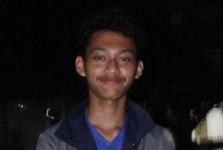

FOTO AKTIFITAS
, Dec 31, 2022

Acara tahun baru
Saya lagi bakar-bakar makanan malam malam terus saya berfoto.
VIDEO AKTIFITAS
17 Maret, 2023
Ini video lagi di bus pulang studytour
studytour ke bandung
About Me

Aldy from Tangerang
My Hoby
My sosial Media
aldynarindra1@gmail.com
Instagram: Aldynarindra